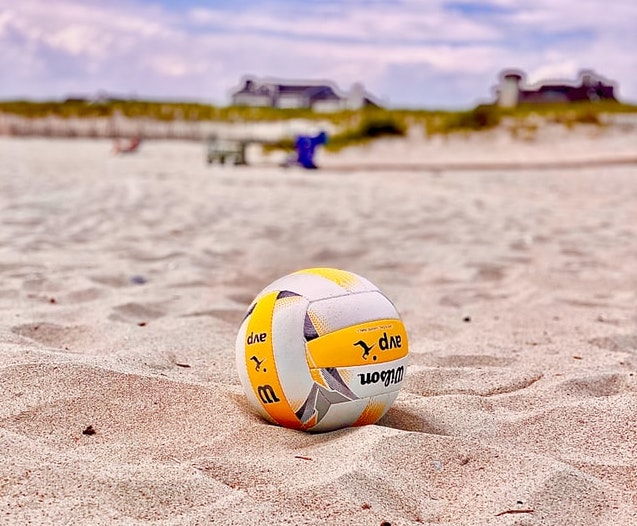

Volleyball is my favorite sport!
No matter if it's on the beach or on the courts, I will play anywhere the ball takes me.
I played volleyball throuhgout my whole grade school to high school years. I like to play with friends
on my spare time, and my whole family are volleyball players as well. I played setter and libero
position, and eventhough my crackling bones don't agree with my joy to play, it is a sport I will
never say no to. I did however play other sports such as softball, track, badminton, and basketball
but volleyball was my main activity. Give it a try and who knows you might like it too.